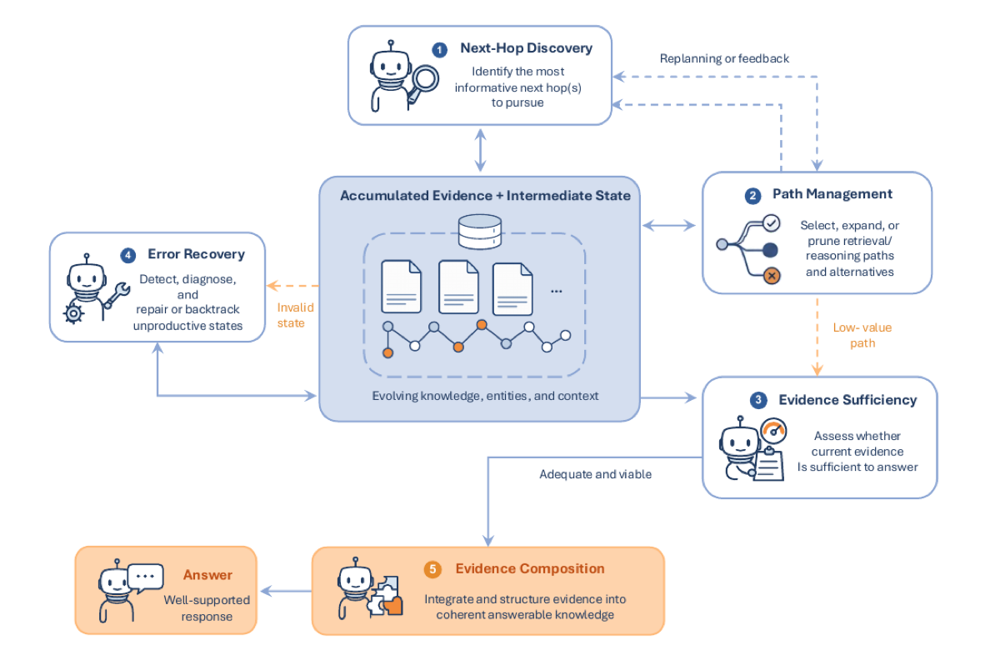
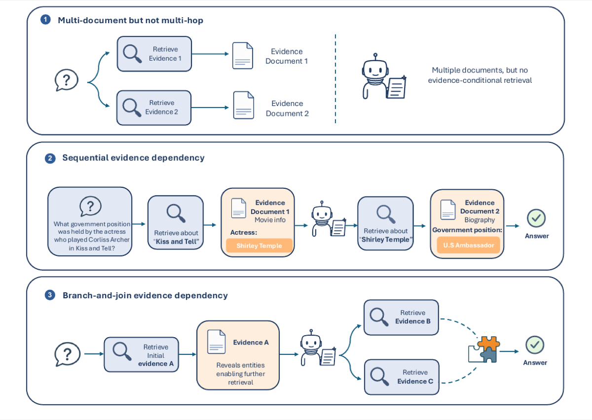
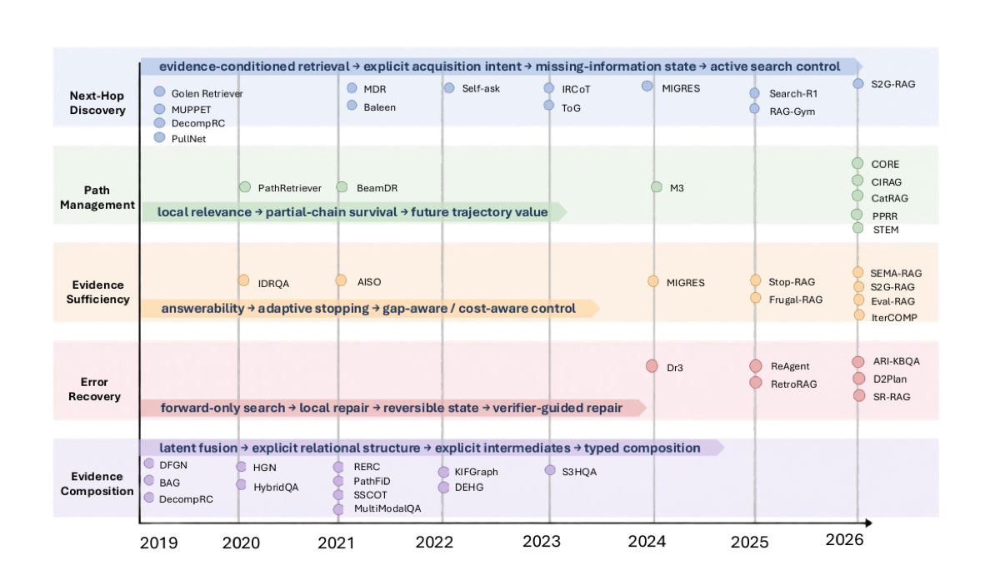

Next-Hop Discovery
What concrete information should be sought next from the current evidence state?
TOIS survey · paper-aligned research hub
A challenge-centered map of how systems discover the next hop, manage paths, judge sufficiency, recover from failure, and compose dependent evidence.

Figure 2Evidence-state control and evidence useThe analytical framework
The first four functions control how the evidence state evolves. Evidence Composition concerns whether the assembled support can be used correctly. The categories are nonexclusive and are assigned by decision object, not architecture name.
What concrete information should be sought next from the current evidence state?
Which candidate trajectories should be retained, prioritized, merged, or pruned?
Is the current evidence adequate for the remaining task and downstream reader?
After a state is diagnosed as invalid, how should it be revised, replaced, or restored?
Can the system bind, compare, join, aggregate, or transform the required evidence?
Visual framework
Each visual answers a different reader question: what makes a task multi-hop, how the five functions interact, and how representative mechanisms evolved across the literature.

Dependency among external evidence units - not document count or a fixed number of retrieval calls.
Open vector PDF →Adequacy and integrity drive distinct transitions among discovery, path control, repair, and composition.
Open vector PDF →
Representative mechanisms show how challenge functions increasingly coexist inside shared controllers.
Open vector PDF →Review evidence
Discovery favors recall; inclusion and challenge coding require primary-source inspection. The current public hub exposes the protocol and aggregate results while the final row-level release remains in progress.
Corpus construction
Four discovery channels converge into one frozen canonical-work snapshot.
Direct is the manuscript's primary prevalence criterion; Direct+Secondary is a sensitivity view.
Research routes
The hub separates conceptual guidance, review evidence, literature discovery, and historical provenance so readers can interpret each resource at the right evidentiary level.
Section-by-section correspondence, public status, figure mapping, and versioning rules.
Open the map → CodebookCore, Supporting, Transfer-relevant, and Direct / Secondary / No decision rules.
Read the codebook → EvidenceCorpus flow, counts, Direct overlap, review reliability, and interpretation boundaries.
Inspect the audit → ReadingPrimary-source reading paths organized around the five current challenge functions.
Browse papers → ProtocolSearch channels, venue closure, scope review, adjudication, and public release boundary.
Review the protocol → EvaluationIntermediate diagnostics, matched controls, resource reporting, and attribution guidance.
Use the checklist →Artifact transparency
Every resource is positioned by evidentiary role. Aggregate results are public; row-level manuscript evidence remains a clearly identified release milestone.
Resources that readers can use and verify in the current repository.
Materials still required for independent row-level regeneration.
Adjacent-survey discovery layer
The workbook supports discovery and cross-survey comparison. It is deliberately separate from the frozen 208-work reviewed evidence map and does not establish scope or challenge coding.
Download the workbookCite the work
Draft metadata is used until publisher identifiers are assigned. The repository URL keeps the public research resources attached to the citation.
@article{luo2026resolving,
author = {Yuqing Luo and Kai Zhang and Liyang He},
title = {Resolving Evidence Chains in Multi-Hop RAG:
A Challenge-Centered Survey},
year = {2026},
note = {Manuscript draft. Companion repository:
https://github.com/TsingyuL/multi-hop-rag-survey}
}
This preserved explorer uses the earlier Observability / Selection preservation / Exposure / Fusion / Faithfulness schema. Use the paper-aligned resources above for current manuscript claims.
| Paper | Year | Decision / route | Tasks & datasets | Resources |
|---|---|---|---|---|
| Loading catalog… | ||||